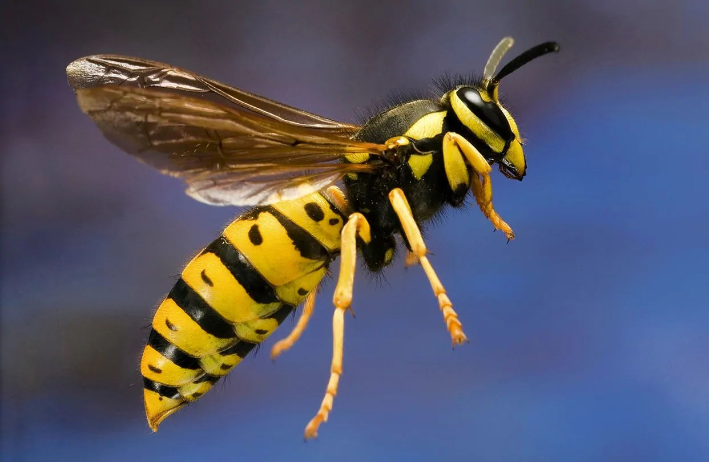

Las Avispas
Los himenópteros constituyen uno de los órdenes más numerosos de insectos, con unas doscientas mil especies.
las avispas son insector muy territoriales e agresivos a diferencia de las abejas estos pueden picar numerosas veces pero tambien como las abejas estos producen miel

Este es un video de un señor eliminando un nido de avispas ubicado bajo tierra ya que las avispas hacen nidos donde quieren, en este video el señor utiliza una aspiradora para eliminar la colmena